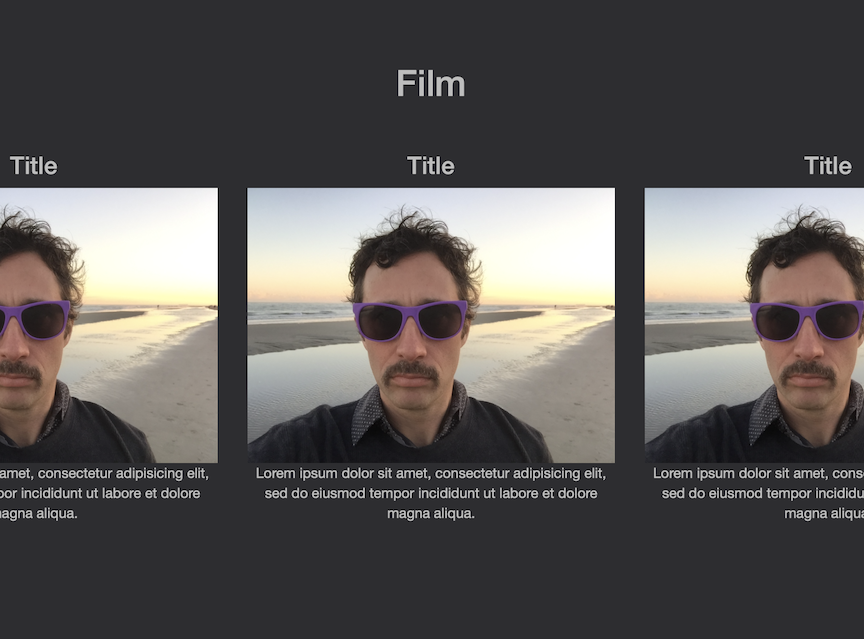

"What might it look like if many people became literate in this technology or if institutions build on the assumption that many people are literate in it? How might we shape the education for these skills to help them be equally distributed?"
-Annette Vee, Coding Literacies (2017, p.224)
When we don’t know how code works, when we don’t understand computer science, we make unknowingly, no matter how skilled we might be working through a program’s user interface (UI). In “Lo-Fi Manifesto” (2008), it is precisely this distance between Aristotelian knowing, making, doing that Karl Stolley argued for the use of a limited set of standardized technologies to direct digital classroom praxis. These limited technologies included teaching standard computing languages such as Hypertext Markup Language (HTML), Cascading Style Sheets (CSS), JavaScript (JS), using standardized protocols that allow for cross-platform functionality, open formats, and even running open-source operating systems like LINUX. In the Lo-Fi, rather than focusing on product alone, students learn to locate creativity through process. “The richest learning experiences reveal how failure and crude initial work transform to something better only through ongoing research and revision,” Stolley wrote. Thus, “Lo-Fi is LOFI” an acronym for a digital production focused on “learning,” “openness,” “flexibility,” and “iteration.” Stolley claimed that learning doesn’t take place without seeing the guts of the process, engagement with “source code and media elements is a hallmark of lo-fi production. All components of a digital work must be available for inspection, revision, and extension outside the scope of any one device, platform, or piece of production software and any one creator.”
We didn’t listen to Stolley, perhaps out of convenience, but largely due to our own digital shortcomings, a truth both unfortunate and understandable. We have been born into an unprecedented age where each new decade exponentially compounds the technological advances made in the one prior. And as a result, our field has been forced to continually adapt to these new technologies, each reshaping what it means to write, to be a writer, to be a teacher of writing. Some in our field have chosen to disconnect, at least to some degree. Jody Shipka (2011), for instance, showed us the old, fecund material ground we trace through our makings and doings. But most of us have embraced this advancing technology, even the corporations that license its use, often without fully understanding the implications of our institutional practices for the rest of society. We find solace in UI design, entrusting it with our functions, which it performs in real-time, at distances that can crisscross continents. It does for us. Makes for us. Knows for us. But while UI design increases usability, it both distances us from the code that performs our functions and the coding literacy we must promote if we wish to attend to the digital divide.
In Coding Literacy (2017), Annette Vee offered a holistic understanding of the role code and coding play in our everyday lives. She argued that whether we know it or not, in this age of ubiquitous computing, we are all already programmers, using our UI to write the quotidian code for the apps and digital tools that get us through our day. Along these lines, Vee argued that this same code is changing how we think and how we write. As she eloquently put it, “Code is writing, but it also underwrites writing. As we have become increasingly surrounded by computation, we have, in many ways, become more embedded in writing” (24). For these reasons, Vee urged us to explore the material and sociocultural implications of what she calls "coding literacy," and to invent new possibilities for promoting this literacy in our institutions. While Vee does not necessarily advocate for programing or writing code in the rhetoric and composition classroom, her literacy framework provides those of us who do a new approach for imagining this pedagogy.
In a UI-driven design world, we cannot overstate the anxiety many individuals experience when encountering code. This codephobia is regularly lost on those who program or write code, just as it is lost on those who promote programing or writing code in the rhetoric and composition classroom, even Stolley (2012). If we wish to promote any form of coding literacy at scale, our earliest attempts will need to address these fears. And in this sense, we have much to learn from the field of basic writing. In 1976, Mina Shaughnessy introduced the sub-field of basic writing in an effort to shift the discussion away from what educators thought student writers were doing wrong to what educators could be doing to better address the specific needs of student writers. Similarly, this paper suggests a turn to basic coding as a method for promoting coding pedagogy across our institutional spaces. Though the concept of “basic coding” might engender visions of students writing code in BASIC coding languages (Kern 1987), it need not, nor should we preclude it.
Rather, this paper suggest we leverage Vee’s material and sociocultural approach to coding literacy as we invent and implement new practices to integrate code into our rhetoric and composition classroom. Before we instruct our students to program “Hello World!”, we must first provide enough exposure to the coded structures that, as Vee put it, “underwrite writing.” Instead of beginning with writing code, perhaps we should start by reading it. Just as we introduce children to the sounds of language, we might begin by learning to listen to what the code is doing and saying. We should be cognizant that in addition to commands and descriptors, HTML and Markdown consists of content. These languages incorporate both kinds of writing, the one stating what is to be done, the other what must be said. Along these same lines, when we do ask students to program or write code, we might reimagine what it means to program and write code. Here again, Vee’s coding literacy is useful in that she sees programing and the writing of code through an ecological rhetorical frame, understanding that much of the code we write is a kind of bricolage (Turkle & Papert 1990; Holmevik 2012), assembled from other’s ideas and arguments within discourse communities (Vee 2017; Byrd, 2019). As with any literacy, exposure and participation in code discourse communities leads to a rhetorical awareness that facilitates its use.
Labor is, and always will be a concern when introducing new pedagogies. If we wish to promote basic coding in the rhetoric and composition classroom and across the disciplines, we can’t assign more tasks for teachers to do in addition to what they are already doing. Rather, we must identify areas where teachers are already engaging technology, and determine which tasks might best incorporate code into the process. Of all the things we teach in the rhetoric and composition classroom, multimodal communication assignments will provide our best ingress into coding literacy.
Code templates can provide a low floor, high ceiling, open-source multimodal tool that will make code accessible to teachers and students. These words have been constructed on a basic coding tool called Open Fuego designed to support the rhetoric and composition classroom. While some argue that templates constrain user creativity (Vee 2017), they need not do so. Open Fuego provides a range of code templates for different purposes, and each includes an ancillary code bank consisting of code snippets. These embedded code snippets provide the same drag and drop affordances of visual design tools like Wix, Weebly, and Adobe Spark, but instead of a clean UI, students work directly with code. The standard CSS design generates a clean mobile-ready aesthetic but leaves the user ultimate control over all design choices. Rather than teaching students to “program” or “write code” from scratch, this method encourages the user to “work with code” using HTML comment tags hidden in the code. Code developers use comment tags to label or describe functions for others who may be working in the same document at a later date. In this case, comment tags guide the user through all instruction, explaining what specific lines of code do, how the user can add or modify content, and also address and explain issues of accessibility, encouraging the user to design and develop their work in a manner both usable and accessible for all users. Once students have finished creating, they can upload and commit their files to a project repository in GitHub and publish their page to the internet. Alternatively, students can host their work on local university servers or wherever else they desire—the important point here is that unlike proprietary code tools, students own their own code, and it's clean.
Open Fuego provides an open-source solution; the title and all content may be adapted for institutional purposes. If we intend to address the inequalities and inequities in our field, our institutions, and the communities we serve, then ALL users and groups, especially those excluded by our designs, must, as Adam Banks (2006) argued, be able “to both change the interfaces of that system and fundamentally change the codes that determine how the system works” (p. 45). Because a large majority of users (Pew, 2019) access technology using smart phones, the work of basic coding will require us to reimagine our mobile phones as code editors. While some of my students have completed Open Fuego projects using mobile phones, these tools and practices must be further developed to improve usability and accessibility for all users.

In addition coding literacy, Open Fuego is designed to promote a number of other pedagogical goals including computational thinking (Wing 2006) and general computer science knowledge.
While we should strive for the same openness as Stolley (2008), we actually need hi-tech to get the work of tomorrow done. James Gee (2013) wrote that tools themselves are not the panacea, but a means to “leverage and empower the actions of all sorts of people, to resource their creativity, and to engage their active participation” (p. 211). And this is important, because to solve our world’s largest problems, Gee argued we will need smart people working collectively to create new and powerful tools. Because there are too many moving parts, we must rely on the tools and knowledge of others, the “full stack” (Vee 2019) of front-end, back-end, doc. writers, and interconnected network of people working directly or adjacently within an ad hoc integrative design system. In my work I am especially interested in free and open-source software communities because these communities ask something of the user. Open and free code permits the user to branch and modify projects for their own end, but requests that changes be published to the larger community. Thus, when we use community-built open-source tools, we should also be thinking how our own knowledge and application might improve the tool. Similar to Kevin Brock (2019), I’m wondering how our field’s specializations in rhetoric, composition, and pedagogy might inform tool design and reshape how users interact with open-source tools and their communities. In that our field has long specialized in inventing, designing, styling, packaging, and delivering information and information systems, how might we employ our own knowledge and skills at scale to make coding less abstract and more concrete, less virtual and more actual, less conceptual and more utilitarian? And in full consideration of the previous questions, I wonder how the field of rhetoric and composition, in that we represent the most populous body of educators in higher education, and given a full effort to circulate free and open-source technologies that are easy to teach and use, might address the inequality and inequity that fertilizes our growing digital divide? Basic coding must invite our students to work with code in open-source communities and begin a praxis that “join(s) with broader social movements in challenging the persistent inequalities in access to both education and technology that prevent many people from having their voice heard […]” (Palmeri 2012, p.160). Antonio Byrd’s (2020) success in implementing after school coding programs should serve as the best possible model towards direct social engagement, demonstrating how community writing projects leverage technology as a conduit through which less-privileged participants might matriculate into the privileged spaces of higher education and industry.
“The work is waiting for us,” Shaughnessy wrote of basic writing (238). And it will require a “professional courage.” Basic coding, like its predecessor, asks us to begin somewhere, that somewhere being each of our own classrooms. For it to succeed, basic coding must be as diverse as those it serves, but also usable, inclusive, accessible, various, free and open-source.
Brock, Kevin. (2019). Treating code as persuasive argument. in J. Jones & L Hirsu (Eds.), Rhetorical Machines: Writing, Code, and Computational Ethics (pp. 69-85). Tuscaloosa: University Alabama Press.
Byrd, Antonio. (2019). Between learning and opportunity: A study of African American coders’ networks of support. Literacy in Composition Studies, 7(2), 31-56.
Byrd, Antonio. (2020). Like coming home": African Americans tinkering and playing toward a computer code bootcamp. College Composition and Communication, 71(3), 426-452.
Gee, James P. (2013). The anti-education era: creating smarter students through digital learning. New York, NY: Palgrave Macmillan.
Holmevik, Jan R. (2012). Inter/vention: Free play in the age of electracy. Cambridge, MA: MIT Press.
Kern, Alfred. (1987). Basic writing: the student as programmer. ADE Bulletin, 86, 4–7.
Palmeri, Jason. (2012). Remixing composition: A history of multimodal writing pedagogy. Carbondale, IL: Southern Illinois University Press.
Pew Research Center. (2019). Mobile fact sheet. Pew Research. Retrieved March 26, 2021 from https://www.pewresearch.org/internet/fact-sheet/mobile/
Shaughnessy, Mina. (1976). Diving in: An introduction to basic writing. College Composition and Communication, 27(3), 234-239.
Shipka, Jody. (2011). Toward a composition made whole. Pittsburgh, PA: University of Pittsburgh Press.
Stolley, Karl. (2008). The Lo-fi manifesto. Kairos, 12(3). Retrieved November 12, 2020 from http://kairos.technorhetoric.net/20.2/inventio/stolley/
Stolley, Karl. (2012). Source literacy: A vision of craft. Enculturation: A Journal of Rhetoric, Writing, and Culture, 14. Retrieved November 12, 2020 from http://enculturation.net/node/5271.
Turkle, Sherry., & Papert, Seymour. (1990). Epistemological pluralism: Styles and voices within the computer culture. Signs: Journal of women in culture and society, 16(1), 128-157.
Vee, Annette. (2017). Coding literacy: How computer programming is changing writing. Cambridge, MA: MIT Press.
Vee, Annette. (2019). Full stack rhetoric in J. Jones & L Hirsu (Eds.), Rhetorical Machines: Writing, Code, and Computational Ethics (pp. 237-244). Tuscaloosa, AL: University Alabama Press.
Wing, J. M. (2006). Computational thinking. Communications of the ACM, 49(3), 33-35.
Quigley, Stephen. (2020). Various [Screen shots]. Open Fuego. Retrieved February 1, 2021, from https://open-fuego.github.io/Open-Fuego-Coding-Tools/
GitHub. (N.d.). Octocat [Logo]. GitHub. Retrieved May 19, 2020, from https://github.com/
University of Pittsburgh Stock Photo (N.d.) Cathedral and Banner [Photograph]. Office of University Communications & Marketing. Retrieved May 19, 2020, from https://www.communications.pitt.edu/photography